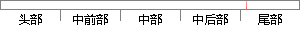

地图界面正常显示，右侧还有放大缩小按钮，能对地图进行简单的缩放操作。
片段位置图

相似结果|
相似片段 1：显示。通过拉选矩形选框进行地图放大时，屏幕以无极缩放的形式显示矩形选框包含区域的地图。视图缩小即为视图放大的相反操作。选择视图平移按钮，即可拖动地图在东西南北方向对地图进行漫游显示。同时，本系统可以记录
|
※ 片段修改建议 ※
近似词参考：- 地图：舆图
- 显示：表现
- 右侧：右边
- 还有：另有
- 地图：舆图
- 进行：举行
- 简单：简略 简朴
- 操作：操纵
系统自动生成语句： 舆图界面正常表现，右边另有放大缩小按钮，能对舆图举行简略的缩放操纵。
注：本片段修改建议为系统自动生成，仅供参考。